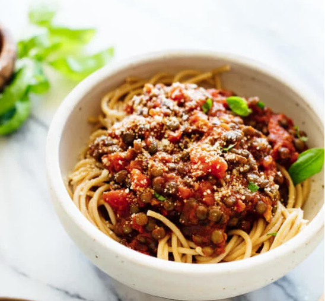

My Wednsday menu
Lentils Spaghetti

Ingridiens:
- ½ cup dry lentils (French green lentils or regular brown lentils), or 1 ½ cups cooked lentils (leftover or from a can, rinsed and drained)
- 1 bay leaf
- 1 large garlic clove, peeled but left whole
- ¼ teaspoon salt
- 2 cups vegetable broth or water
- 400ml chopped tomatoes
- 8 ounces whole-grain pasta (or 12 ounces, if you like your pasta less saucy than mine)
- Optional garnishes: grated Parmesan or vegan Parmesan and/or chopped fresh basil
Method
To cook the lentils, first pick through the lentils for debris (I once bit into a tiny rock) and then rinse them in a fine-mesh colander. In a small saucepan, combine the lentils, bay leaf, garlic, salt and broth. Bring the mixture to a simmer over medium-high heat, then reduce heat to maintain a gentle simmer. Simmer until the lentils are cooked through and tender, which will take somewhere between 20 to 35 minutes, depending on the age and variety of the lentils. Drain the lentils, discard the bay leaf and garlic, and set the pot aside, uncovered. Meanwhile, bring a large pot of salted water to boil. Cook the pasta until al dente, according to the package directions. Drain, then return the pasta to the pot and set it aside. Stir the marinara into the lentils and warm them together over medium heat. Divide pasta into bowls, top with warm marinara and lentils, and garnish with Parmesan and/or chopped fresh basil, if you’d like. Serve warm. Leftovers will keep well, covered and refrigerated, for up to 4 days